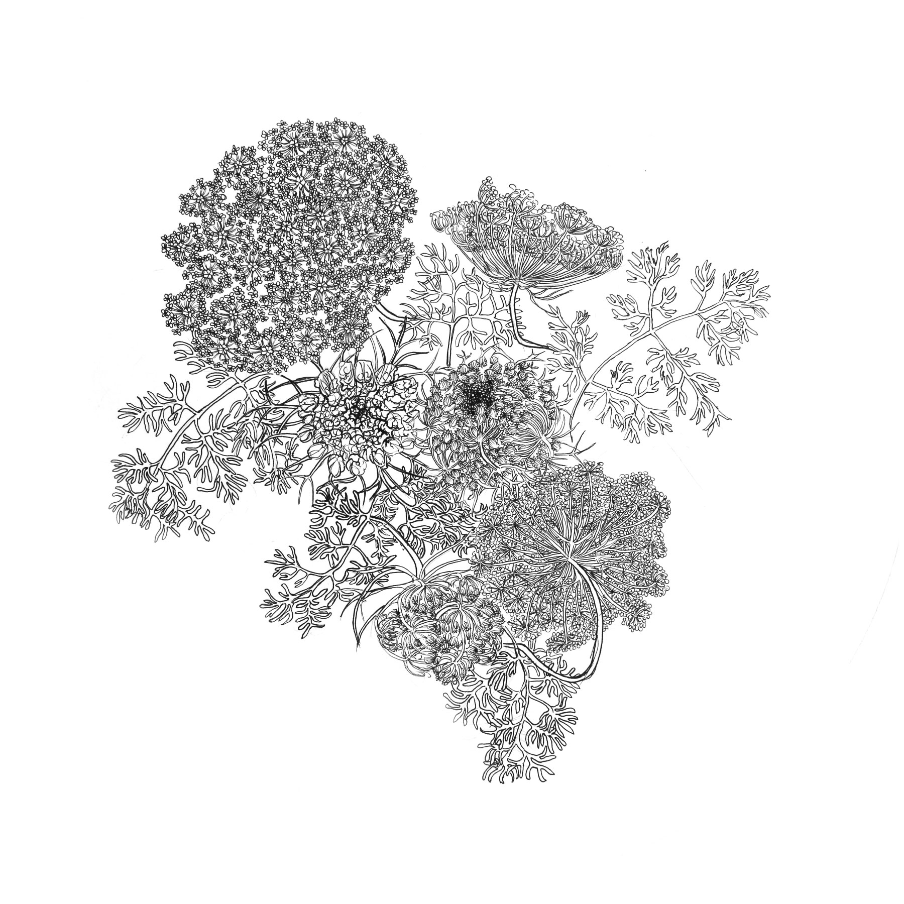

CV
Education
- 2014 — MFA, OCAD University, Toronto (Interdisciplinary Art Media and Design)
- 2011 — BFA, Otago Polytechnic, New Zealand (Sculpture major, Drawing minor)
Solo Exhibitions
- 2020 — Know The Ways, Flux Factory, New York City
- 2019 — Atlas of Nowhere, Ashburton Public Art Gallery, New Zealand
- 2018 — River Credits, Sheridan College, Ontario
- 2015 — Chromatone, Stantec Window Gallery, Toronto
- 2014 — Pollinate/Illuminate, Huntclub Gallery, Toronto
- 2013 — Low Voltage High Starch, OCAD University Graduate Gallery, Toronto
Selected Group Exhibitions
- Every. Now. Then: Reframing Nationhood — Art Gallery of Ontario, Toronto
- INSTRUMENTA II — National Gallery of Indonesia, Jakarta
- Eco|Femin|Isms — White House Studios
- Onions, Life and Hotdogs on Parade — Zalucky Contemporary, Toronto
Residencies
- 2019 — Flux Factory, New York City
- 2018 — Banff Centre for Arts and Creativity, Alberta
- 2017 — Artscape Gibraltar Point, Toronto
- 2013 — School of Making Thinking, New York City
Awards & Grants
- 2019 — Canada Council for the Arts, Professional Development
- 2018 — Banff Centre Artists Award
- 2018 — Canada Council for the Arts, Explore and Create
- 2017 — Toronto Arts Council, Emerging Artists Grant
- 2016–17 — Ontario Arts Council (multiple)
- 2014 — OCAD 3 Minute Thesis Competition, First Place
Curatorial
- Co-founder, Younger Than Beyoncé (YTB) Gallery, Toronto (2014–present)